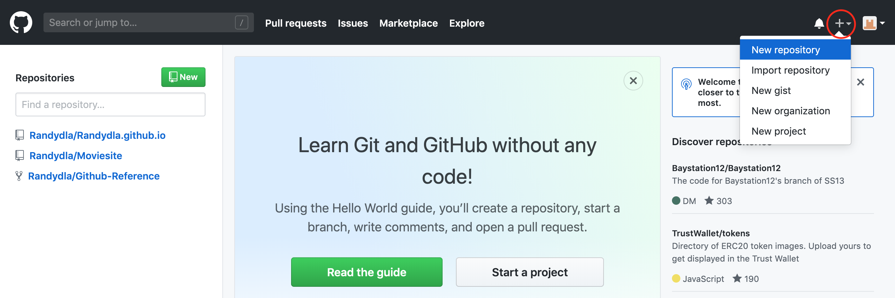
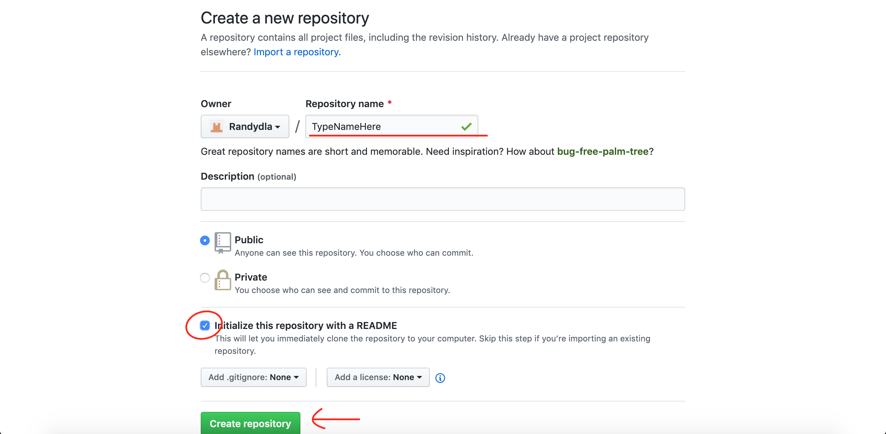
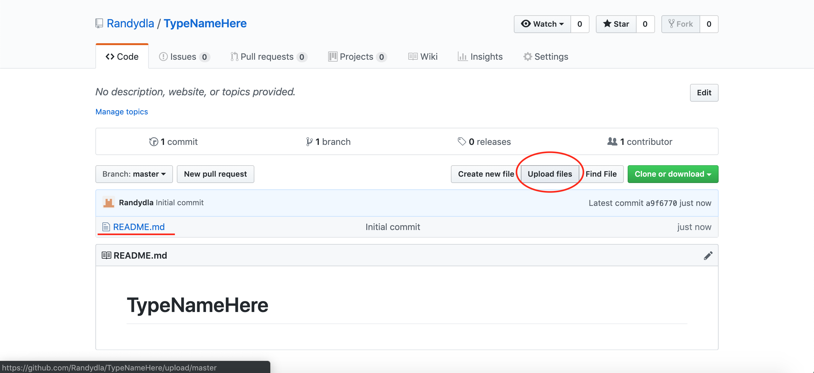
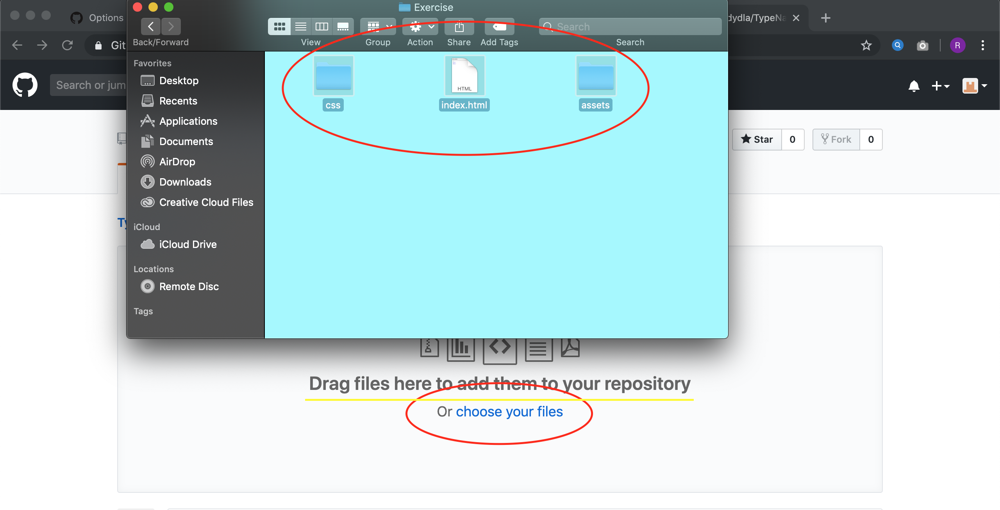
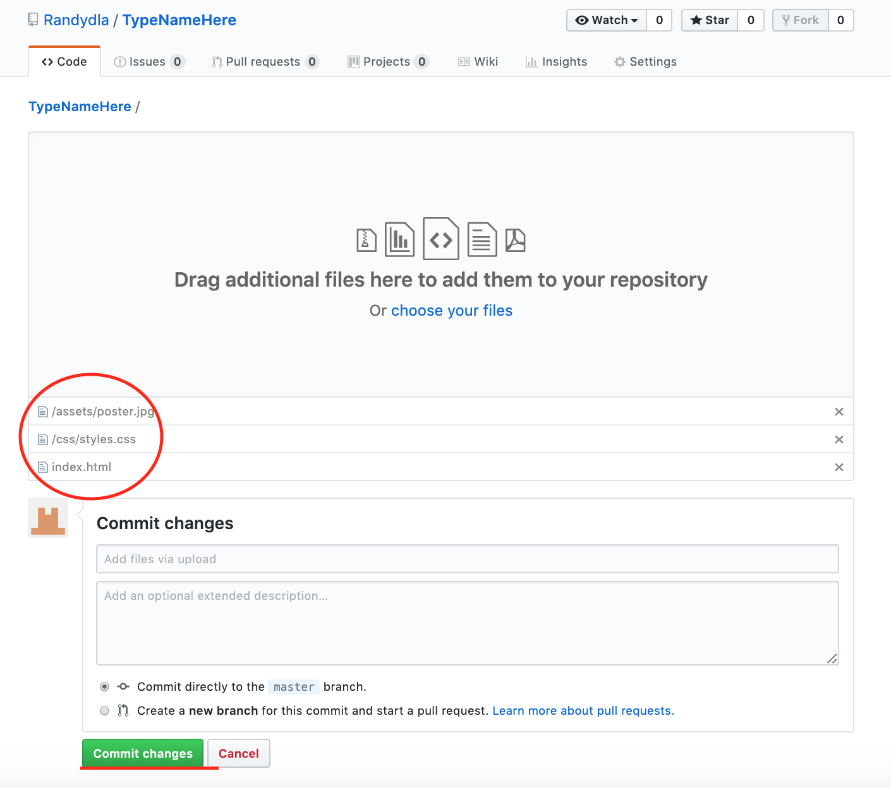
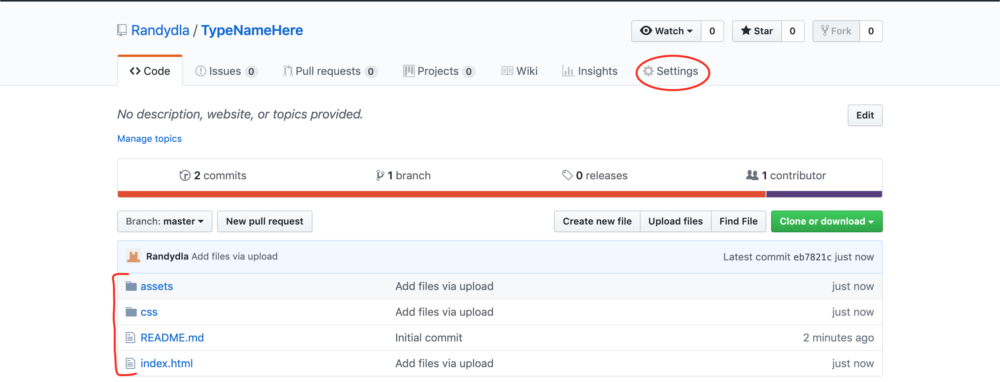
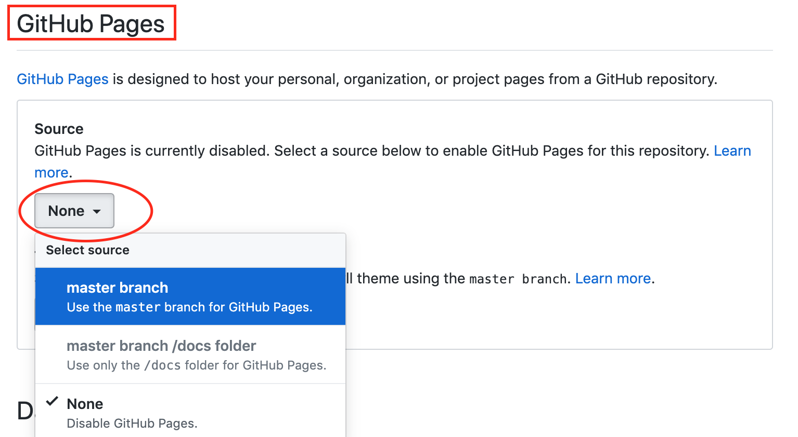
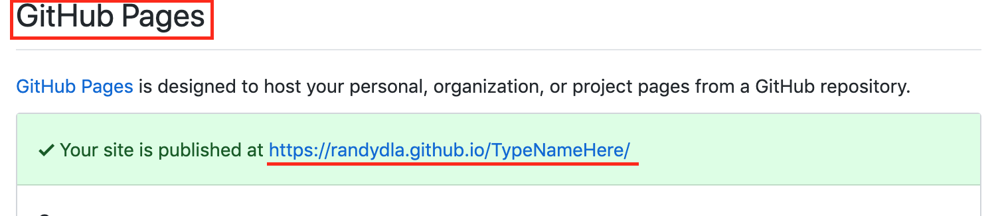

Once logged in, click on the "+" sign at the top right of the page. Then click on new repository.
Give the file a name under "Repository Name *". Next click the box that says "Initialize this repository with a README. Finally click the green "Create Repository" box.
Now that the repository is created, there will be a README.md file under "Initial Commit". Next click on "Upload Files".
Click on the blue underlined "Choose Your Files" link. Your Finder folder will pop up. Highlight all your files/folders, click and drag them where it says "Drag Files Here".
The files you uploaded should display where you dragged them. If you see every file you want uploaded, write what you did on the description box than click the "Commit Changes" button.
Now in the repository, you can see all files uploaded. To publish website click on "Settings".
Scroll down till you see "GitHub Pages". Under "Source" there's a box that says "None". Click on it and select "master branch".
The page should refresh if not do so than scroll down to "GitHub Pages" again. There should be a link that is ready to be published. Click or Copy in order to open.
